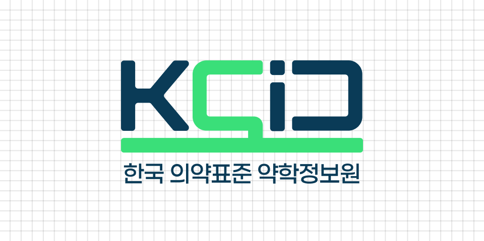

스마트 의약데이터 플랫폼
재단법인 약학정보원을 소개합니다
-
- 25
- 년간의 안정적인 경영
-
- 4
- 만여 건의 의약품 데이터
- 식약처 허가약품
- 35,933개
-
- 1
- 만여 곳에서 사용하고 있는
약국 전산 프로그램
재단법인 약학정보원을 소개합니다

Korea Pharmaceutical Information Center의 약자인 KPIC를 알약 모티브로
디자인하여 약학정보원의 아이덴티티를 명확하게 표현할 수 있도록 설계했습니다.
치료를 상징하는 그린컬러와 약품 정보의 신뢰 · 무게감을 담은 네이비 컬러로 국민 건강 증진,
대한민국 표준 의약데이터를 중심으로 운영하는 약학정보원의 특징을 표현했습니다.